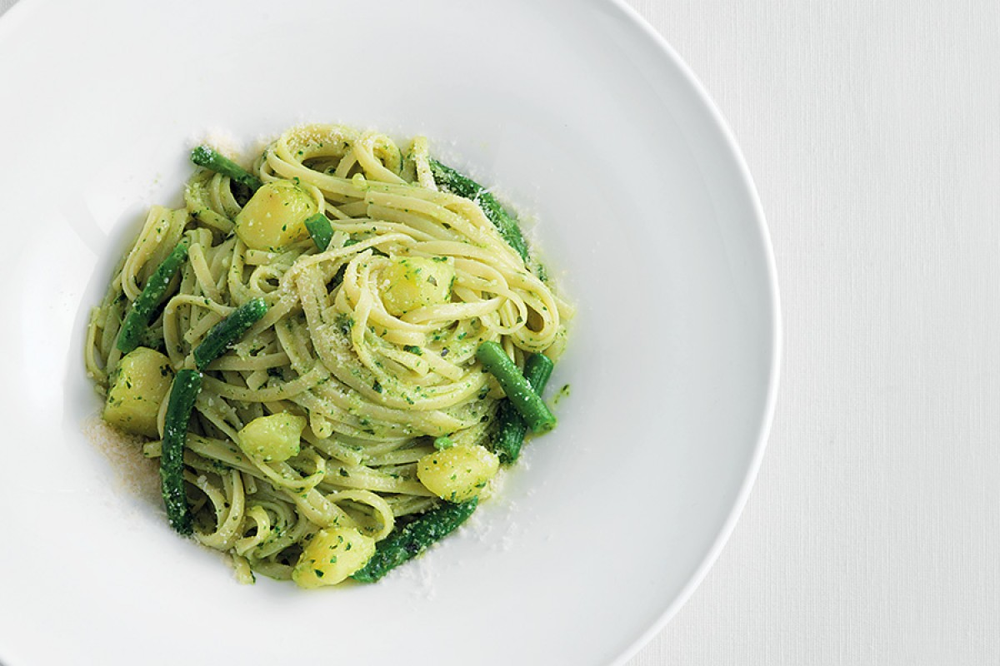

Trenette with pesto

Finished trenette with pesto
Basil is a cherished ingredient from the Italian region of Liguria.
Combined with extra-virgin olive oil, pine nuts, Grana Padano and
Pecorino, it is the backbone of pesto. Tossed with trenette, potatoes and
green beans the fragrant sauce shines.
Ingredients
- 12.5 oz. dry trenette (or linguine)
- 1/2 cup extra-virgin olive oil
- 1 oz. basil leaves
- 1 Tbsp. Pecorino Sardo cheese (or other Pecorino), grated
- 1 garlic clove, unpeeled
- 1/3 lb. potatoes, peeled
- 2 oz. green beans, cleaned
- 1 oz. pine nuts
- 1 Tbsp. Grana Padano, grated
- salt
Steps
-
Cut the potatoes into ¼” cubes and chop the green beans into ½”
segments.
-
For the pesto, blend together the basil, pine nuts, olive oil, garlic,
Grana Padano cheese, Pecorino, and a bit of salt.
-
Bring water to a boil in a large pot and salt. Add the potatoes and
green beans and cook for 2-5 minutes. Then add the trenette and cook
until al dente.
- Toss the pasta with the pesto and serve immediately.